A casa da coragem
Grifinória
Onde habitam os bravos de coração, a ousadia e a determinação.
Coragem · Bravura · CavalheirismoO convite foi entregue
Além da plataforma nove e três quartos, existe um lugar onde a coragem, a amizade e a magia mudam tudo.
Explore o universoO chapéu seletor aguarda
Tradições distintas, unidas pela magia. Descubra o que torna cada casa inesquecível.
A casa da coragem
Onde habitam os bravos de coração, a ousadia e a determinação.
Coragem · Bravura · CavalheirismoA casa da ambição
Para quem encontra caminhos, honra suas raízes e mira alto.
Ambição · Astúcia · DeterminaçãoA casa da sabedoria
Um lar para mentes curiosas, criativas e sempre em busca de saber.
Sabedoria · Criatividade · PerspicáciaA casa da lealdade
Onde a paciência, a justiça e a amizade têm lugar de honra.
Lealdade · Justiça · DedicaçãoRostos de uma lenda
Amigos, mentores e heróis. São suas escolhas que dão forma à história.
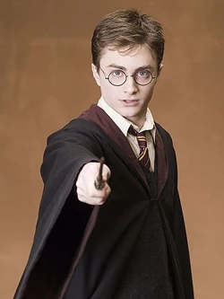
01 / 04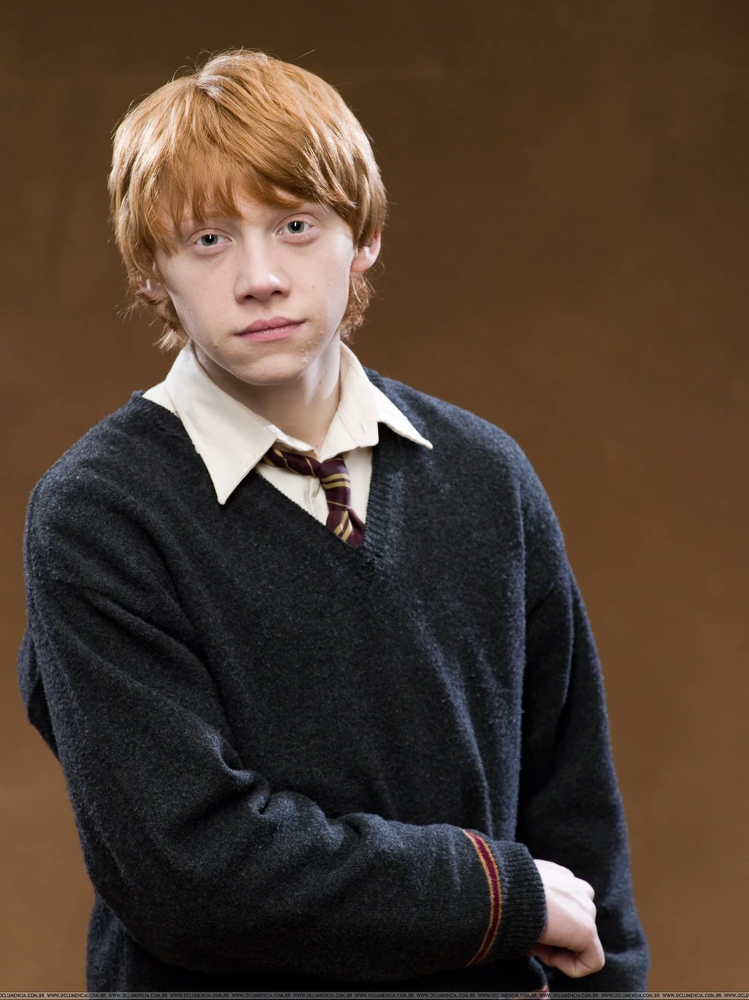
03 / 04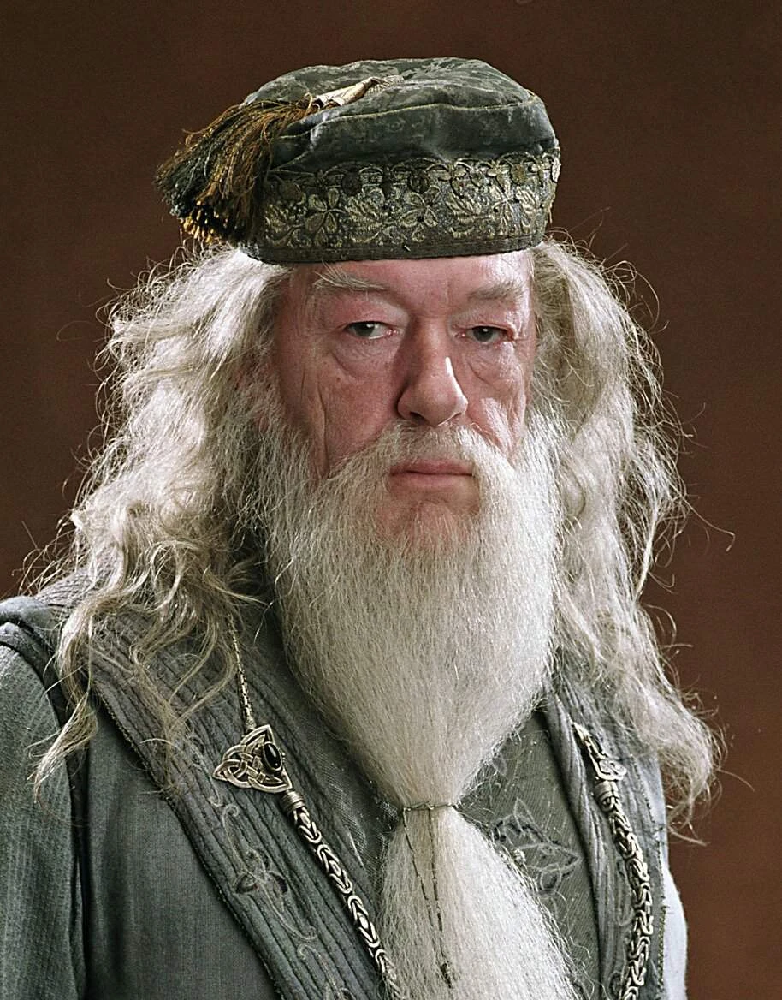
04 / 04Há mais do que os olhos veem
Por trás de cada porta, uma descoberta. Por trás de cada feitiço, uma história.
Palavras de poder
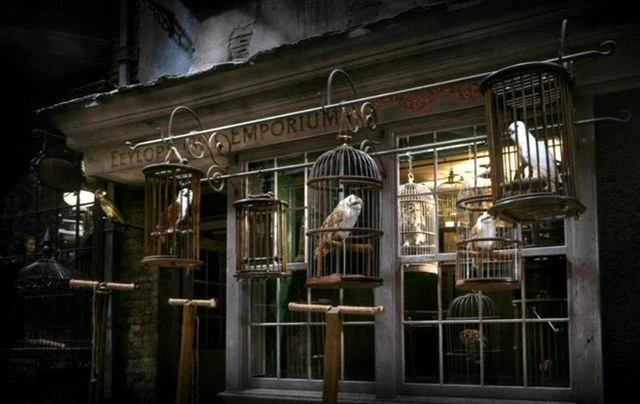
Seres extraordinários
Magia ao alcance das mãos

Portas para outros mundos
Vire a página. A magia continua.
Uma saga contada em páginas e imagens. Relembre os capítulos que fizeram o mundo inteiro acreditar em magia.
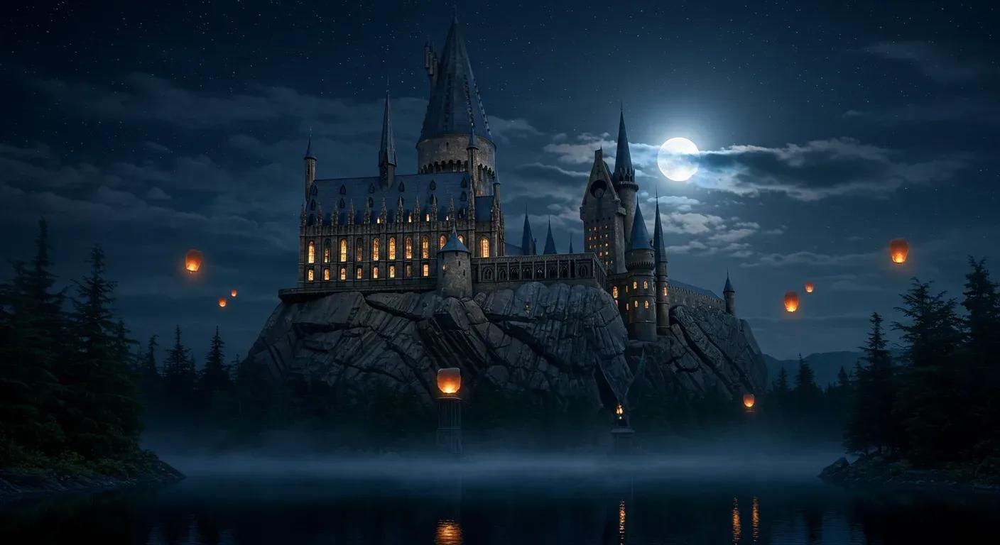
FILME · 200101O início de tudo
FILME · 200202Um segredo nas paredes
O passado retorna
O torneio começa
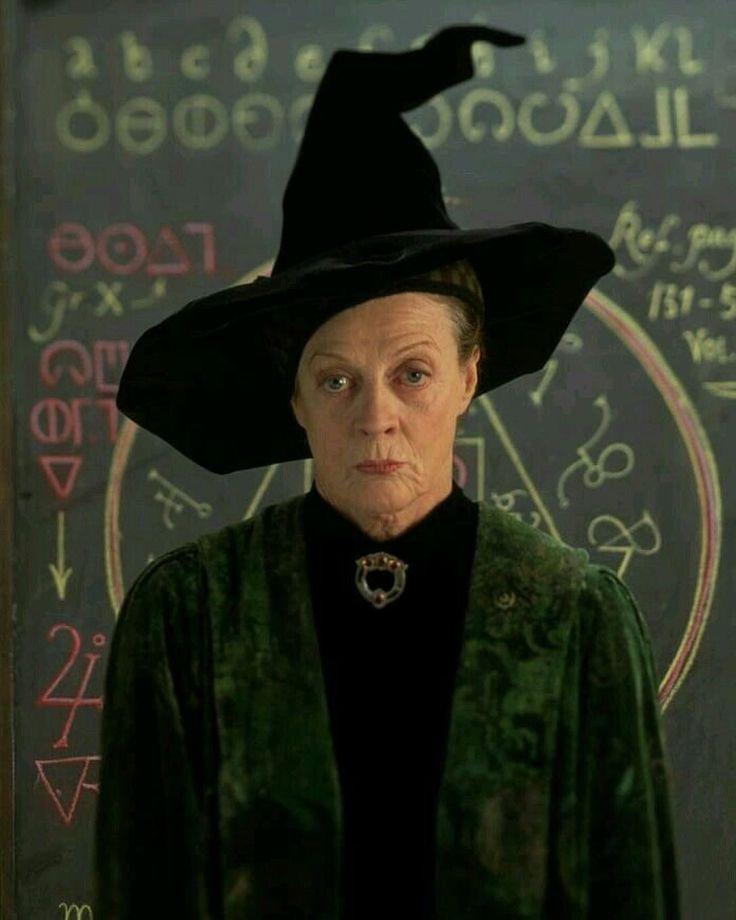
FILME · 200705Resistir e aprender
Memórias reveladoras
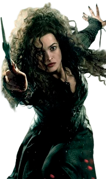
FILME · 201007Uma jornada sem Hogwarts
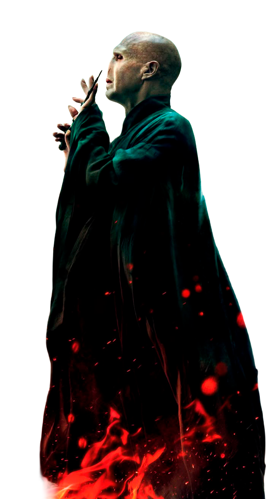
FILME · 201108O confronto final
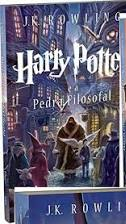
LIVRO · 199701A carta que mudou tudo
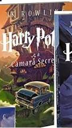
LIVRO · 199802Uma voz nos corredores
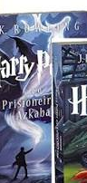
LIVRO · 199903Um fugitivo à solta
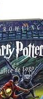
LIVRO · 200004O mundo bruxo se reúne
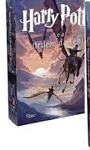
LIVRO · 200305Uma resistência secreta
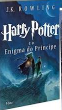
LIVRO · 200506O passado de Voldemort
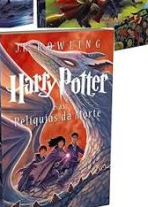
LIVRO · 200707A última jornada
Uma seleção de capítulos da saga. Que história você revisitaria?